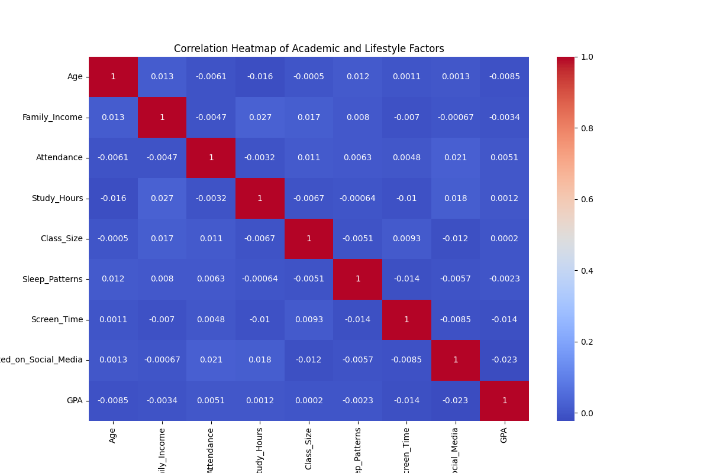

Project by: Ryan Jiang, Keshav Goel, Max Fan
Education plays a crucial role in a person’s development. One clear metric of a student’s academic journey is their grades. Academic grades are influenced by various factors such as socioeconomic background, parental involvement, and learning environment. This project aims to analyze these factors to identify trends and insights that impact student performance. Exploring these interconnected factors is crucial because it highlights the challenges and opportunities within the education system. Allowing guidance for teachers, policymakers, and families in making informed decisions that help students reach their full potential.
The dataset contains 10,064 rows and 35 columns. It is sourced from Kaggle. It covers demographic information such as age, gender, and family income, as well as social factors like motivation and self-esteem. Additionally,it contains lifestyle attributes such as technology use and physical activity, along with the student’s grades, measured on a letter scale. Other features in the dataset include study hours, professor quality, tutoring, and bullying, all of which may play a role in academic performance. This dataset is valuable for analyzing the key factors that influence student performance, helping to identify areas where students may need additional support to improve their learning strategies.
We created an interactive Sankey diagram using Plotly to explore how a student's income range, school type, and major relate to their final grades. The flow moves from Income Range → School Type → Major → Grade, with flow widths representing student counts. Our goal was to investigate whether a student’s financial background, the type of institution they attend (public or private), or their chosen major significantly influences academic performance. Interestingly, the grade distributions across all branches were relatively balanced, with each major and school type showing a similar mix of A, B, and C grades. This finding challenges the assumption that private schools are more academically rigorous or that certain majors, like engineering or medicine, are inherently more difficult. While some differences exist, they are not stark enough to suggest a direct correlation between these factors and grade outcomes. This implies that other influences—such as individual effort, learning styles, or external support—may play a larger role in determining student success than major or school type alone.
We made an interactive treemap plot showing the count of each grade of students from each major and whether they attend a public or private university. We wanted to see if going to a public or private university or if the major a student took affected their grade. It’s made using plotly and goes down the path of type of university to major to grade and colored by the grade. An interesting observation is that neither the major nor the institution type affect the GPA much. Each section has mostly B's and a similar number of A's and C's. Whether the number of A’s or C’s vary but there is no obvious definitive cause as to what causes one to have more than the other. This result goes against the belief that some majors are inherently harder than others and how private schools are generally harder than public schools. Since all majors have a similar distribution of grades, it can be assumed that each major is similar in difficulty as well and the perceived difference in difficulty may be attributed to the different ways each major challenges students. For the argument of private schools being more difficult than public schools, the results show that the grade distribution is the same for both. A few reasons for this may be because private schools may be more likely to inflate grades or that students that go to more difficult universities are smarter or work harder than those that attend less competitive colleges.
This is a bar chart that was made with Altair that shows the average time wasted on social media for students that received each letter grade (A, B, C). Although the difference is small, the data reveals a slight trend that the time wasted on social media increases with lower letter grades, with A students having an average of 3.45 hours wasted, while C students having an average of 3.54 hours wasted. This suggests a potential correlation between increased social media usage and lower academic performance, though further analysis would be needed to confirm causation.
This interactive bar chart shows the percentage of students who reported participating in various academic support activities (mentoring, tutoring, educational resources, extracurricular activities), with functionality to sort by grade level and view precise percentages on hover. The narrow range of percentages, from 54% to 56%, suggests that these factors all contribute similarly to academic success, but Mentoring appears to be a positive influence on grades, with the percentage of “Yes” responses decreasing as grades get lower. Interestingly, tutoring peaks among B students (55.2%), which may reflect their proactive efforts to improve to an A grade, while A students might need less tutoring and C students might utilize it less effectively.
This is a grouped bar chart that shows the number of students in each extracurricular participation level separated by grades. This was made with d3. Similar to the sunburst chart, a surprising find is how the level of sports involvement does not seem to affect the grades of students much. The majority of students in all levels of extracurricular involvement have B's with the amount of A's and C's being fairly close. However, proportionally, the more students participate in sports, the more likely they will have either an A or C. This implies, the more active someone is in sports, the more likely they will either perform better or worse than average.

We created a correlation heatmap to investigate how various academic and lifestyle factors relate to GPA. This visualization includes variables such as attendance, study hours, class size, screen time, sleep patterns, and time spent on social media. Each square in the heatmap represents the correlation between a pair of variables, with values close to 1 or -1 indicating stronger relationships. Interestingly, GPA shows **almost no strong correlation** with any of the variables analyzed. For instance, the correlations between GPA and key factors like attendance, study hours, screen time, and even social media usage are all very close to zero. This suggests that no single academic or lifestyle factor in the dataset strongly predicts academic performance on its own. The overall takeaway is that GPA likely depends on a complex mix of variables, or perhaps on other unmeasured factors such as personal motivation, teaching quality, or mental health. While many of these factors are commonly believed to influence grades, our results emphasize that student success cannot be easily attributed to any one behavior or background characteristic.
Overall, our analysis found that no single factor overwhelmingly determines a students' grades; rather, academic performance is influenced by a combination of various factors. While factors like study hours, attendance, and mentoring showed positive correlations with higher grades, their individual impacts were relatively small. Additionally, factors like excessive screen time and social media use had a slight negative effect, but not decisively so. Overall, student success appears to depend on a balanced mix of study habits, support systems, and time management rather than any one dominant factor. This suggests that helping students improve their grades should focus on a mix of study habits, support, and time management rather than just one factor.
Further research can include a predictive model for student performance based on real-time input from teachers and students. This model could leverage data from ongoing assessments, feedback, and participation in academic support activities to offer timely interventions. Additionally, it could incorporate machine learning algorithms to identify patterns and predict at-risk students, allowing for more personalized and effective support. Such an approach could lead to proactive strategies that enhance academic success and student retention. Some of the flaws we could also address are the inconsistencies with the collected data and also how we address the missing data. Currently, we're not sure how the data was collected, but for certain categorical factors like parent involvement, self esteem, and stress levels, it can be hard to guage and classify each students amount. In addition, tons of data were missing so we decided to fill each in with the mean or median values depending if it was quantitative or categorical data. However, this could have potentially skewed our results since most of the categorical factors were only split into 3 levels. If we could adress this in the future, we could possibly gain much more accurate insights.